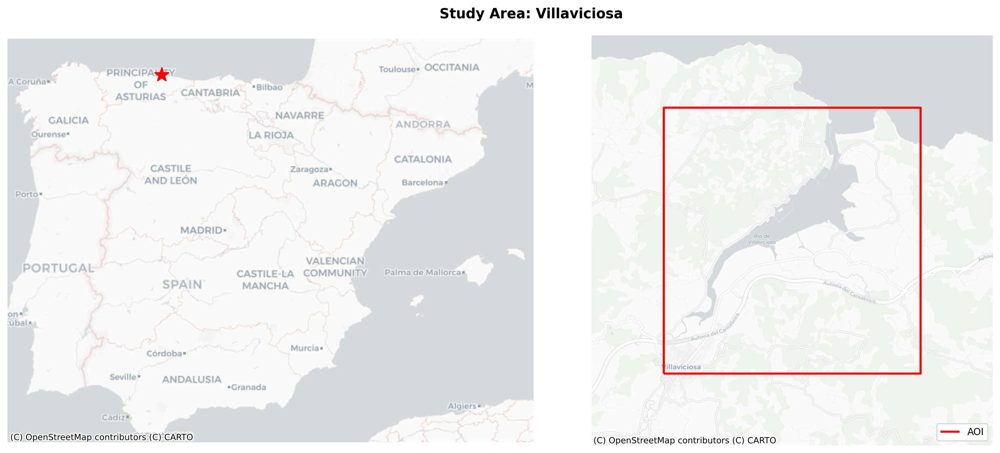
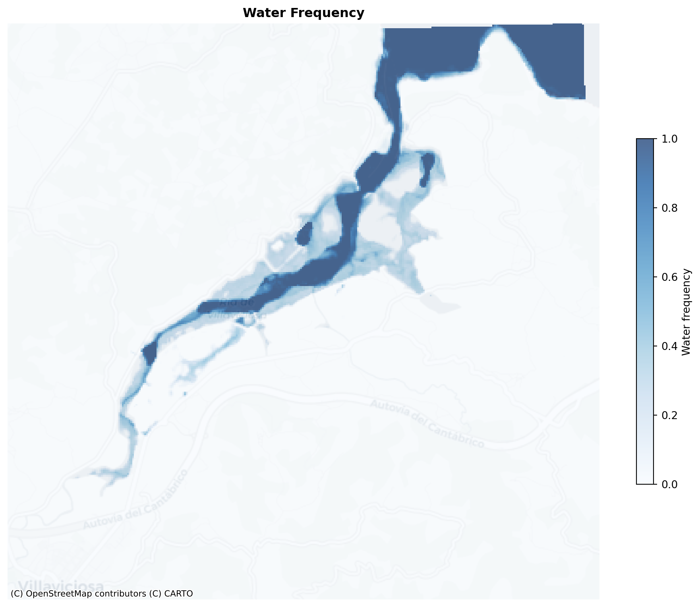
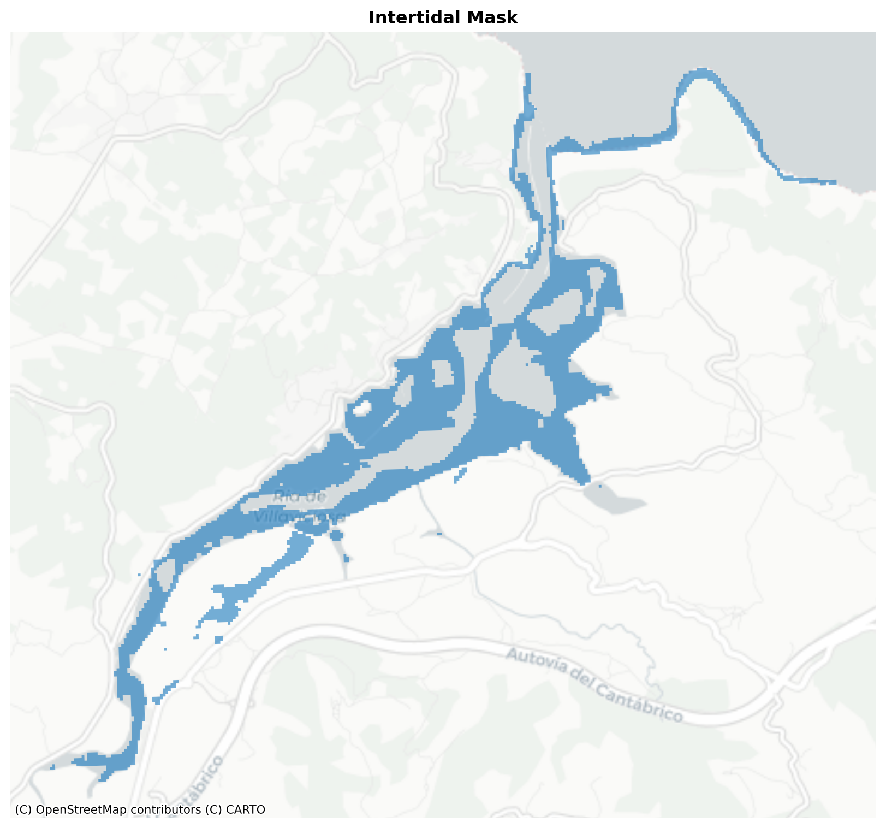
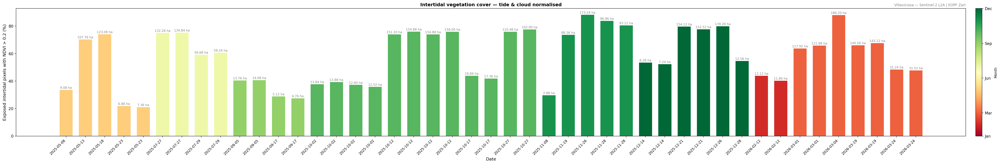
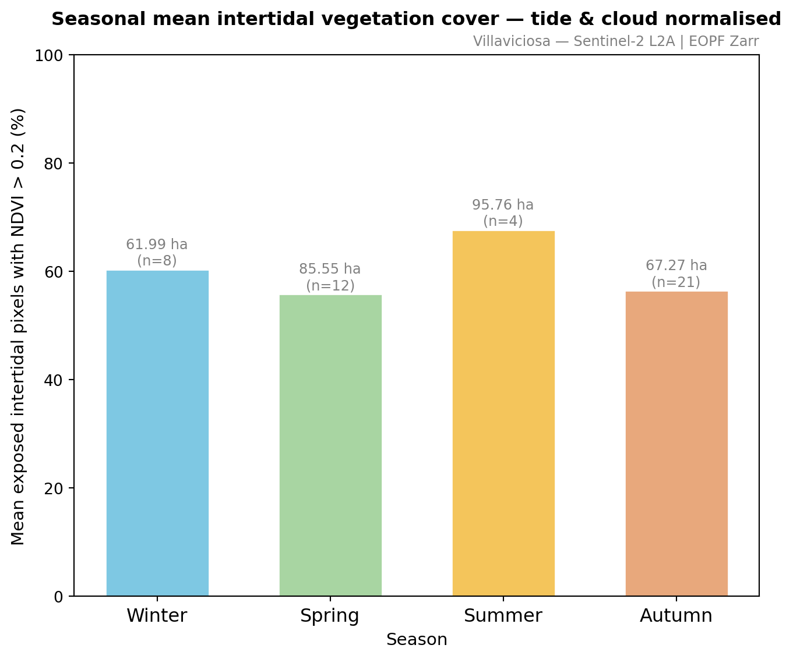

# Standard library
from concurrent.futures import ThreadPoolExecutor, as_completed
# Scientific computing
import numpy as np
import pandas as pd
# Geospatial
import rasterio
import rasterio.enums
import rasterio.transform
from rasterio.features import shapes
from rasterio.warp import reproject as rio_reproject, Resampling, calculate_default_transform
import rioxarray # noqa: F401 – required to activate the .rio accessor on xarray objects
import xarray as xr
import geopandas as gpd
from shapely.geometry import box, shape
from pyproj import Transformer
from pyproj import CRS
# Visualisation
import matplotlib.pyplot as plt
import contextily as ctx
import warnings
# Target the ZarrUserWarning explicitly by its message pattern
warnings.filterwarnings("ignore", message=".*Both zarr.json.*and .zgroup.*")
warnings.filterwarnings("ignore", message=".*Analysis mode not implemented.*")
# EO data access
import pystac_clientCloud-Native Intertidal Vegetation Monitoring with Sentinel-2 and EOPF Zarr
By: @fer-at-sea and @pglez82
Introduction
Intertidal zones — the strip of coastline exposed at low tide and submerged at high tide — are among the most productive and ecologically significant habitats on Earth. Despite covering less than 0.5 % of the global ocean surface, they provide key ecosystem services:
- Carbon sequestration: Salt marshes and seagrass meadows are “blue carbon” ecosystems that can sequester carbon at rates several times higher than terrestrial forests and store much of it in long-term sediments.
- Coastal protection: Intertidal vegetation dissipates wave energy, reducing flood risk for coastal communities in a warming climate.
- Biodiversity hotspots: These zones support invertebrates, migratory shorebirds, juvenile fish, and endemic plant communities that exist nowhere else.
- Climate sensitivity: Because intertidal vegetation is simultaneously exposed to the atmosphere (temperature, drought) and the sea (salinity, sea-level change), it acts as an early-warning indicator of climate-driven coastal stress.
Study Area
The Villaviciosa estuary (Asturias, northern Spain) is a Ramsar-designated wetland of international importance hosting extensive intertidal mudflats and saltmarshes. Regular and systematic monitoring at fine spatial scales can provide valuable information on habitat dynamics but is often difficult to sustain using field surveys alone. Satellite remote sensing, particularly within cloud-native processing frameworks, offers a complementary approach that can facilitate basin-scale and time-series monitoring.
Key characteristics relevant to our remote-sensing approach:
| Feature | Detail |
|---|---|
| Tidal regime | Semi-diurnal; tidal range ~4 m at spring tides |
| Exposures | Extensive low-gradient mudflats exposed for 6–8 h per tidal cycle |
| Designations | Ramsar site, Natura 2000 SAC/SPA, Asturias Nature Reserve |
| Sentinel-2 tiles | Primarily 29TQJ / 30TUP (border zone between UTM zones 29N and 30N) |
A semi-diurnal tidal regime with ~4 m range means that at any given Sentinel-2 overpass (roughly every 5 days), the estuary may be near fully exposed, near fully submerged, or anywhere in between. This tidal variability is the key driver of the water-frequency approach: rather than attempting to record a single synoptic state, we accumulate many snapshots across the full tidal cycle and use the fraction of time a pixel is wet as a proxy for intertidal zone extent.
What we will learn
- 🛰️ How to discover Sentinel-2 products via EOPF STAC and open them as Zarr with xarray.
- 🌊 How to build a time series over a coastal area using lazy loading and partial reads (cloud-native workflow).
- 🌿 How to derive simple spectral indicators to support intertidal vegetation monitoring and visualise the results.
Prerequisites
Workflow Overview
We build a complete cloud-native workflow in six stages:
- Data discovery — query the EOPF STAC catalogue for Sentinel-2 L2A tiles covering the study area using
pystac_client, with no data download required. - Lazy cloud access — open each tile as a Dask-backed
xarraydataset directly from object storage via theeopf-zarrengine and clip it to the area of interest. - Water frequency mapping — stack the Scene Classification Layer (SCL) across all acquisitions to compute a per-pixel water frequency, exploiting the tidal cycle as a natural inundation signal.
- Intertidal zone delineation — threshold the water frequency map to isolate intermittently flooded pixels and export the result as a GeoTIFF and GeoPackage vector file.
- Vegetation monitoring — for each cloud-free acquisition, compute the Normalised Difference Vegetation Index (NDVI) from the red (B04) and near-infrared (B08) bands, restrict the analysis to exposed intertidal pixels (SCL 4/5), and track the fraction with NDVI > 0.2 over time. Normalising by the number of exposed pixels rather than total intertidal area removes the tidal confounding effect, giving a tide-independent vegetation cover metric.
- Temporal aggregation — summarise the NDVI time series by calendar month and by season (Winter / Spring / Summer / Autumn) to reveal phenological patterns in intertidal vegetation cover.
A note on data availability The EOPF Zarr Sample Service STAC catalogue maintains a rolling archive of ~1 year for Europe. This has two important implications for this workflow:
- Intertidal mask quality improves with more images. A longer time series captures a wider range of tidal states — including extreme high and low tides — which helps the water-frequency approach converge on the true intertidal boundary. With only a year of data the mask may be incomplete or biased towards the tidal conditions that happened to be observed.
- NDVI temporal trend becomes more meaningful as the archive grows. Seasonal vegetation cycles (e.g. growth of seagrass or macroalgal blooms) can only be detected once multi-month records are available. As the rolling window advances, re-running this notebook will automatically incorporate new acquisitions.
Import libraries
Area of interest
site = "Villaviciosa"
bbox = [-5.44, 43.48, -5.36, 43.54]
crs_wgs84 = "EPSG:4326"
crs_web_mercator = "EPSG:3857"
# -----------------------------
# STUDY AREA MAP
# -----------------------------
aoi_wm = gpd.GeoDataFrame(geometry=[box(*bbox)], crs=crs_wgs84).to_crs(crs_web_mercator)
fig, (ax_ov, ax_det) = plt.subplots(1, 2, figsize=(14, 6))
# ---- Left ----
spain_wm = gpd.GeoDataFrame(
geometry=[box(-9.5, 36.0, 4.5, 44.2)], crs=crs_wgs84
).to_crs(crs_web_mercator)
b = spain_wm.total_bounds
ax_ov.set_xlim(b[0], b[2])
ax_ov.set_ylim(b[1], b[3])
ctx.add_basemap(ax_ov, crs=crs_web_mercator, source=ctx.providers.CartoDB.Positron, zoom=6)
aoi_wm.boundary.plot(ax=ax_ov, color="red", linewidth=1.5)
centroid = aoi_wm.geometry.iloc[0].centroid
ax_ov.plot(centroid.x, centroid.y, marker="*", color="red", markersize=14, zorder=5)
ax_ov.set_axis_off()
# ---- Right ----
BUFFER = 2500
b = aoi_wm.total_bounds
ax_det.set_xlim(b[0] - BUFFER, b[2] + BUFFER)
ax_det.set_ylim(b[1] - BUFFER, b[3] + BUFFER)
ctx.add_basemap(ax_det, crs=crs_web_mercator, source=ctx.providers.CartoDB.Positron, zoom=13)
aoi_wm.boundary.plot(ax=ax_det, color="red", linewidth=2, label="AOI")
ax_det.legend(loc="lower right", fontsize=9)
ax_det.set_axis_off()
fig.suptitle(f"Study Area: {site}", fontsize=13, fontweight="bold")
plt.tight_layout()
plt.show()
Fetching S2 L2A zarr data
STAC API Search
What is STAC?
The SpatioTemporal Asset Catalog (STAC) specification is an open standard that describes geospatial datasets as machine-readable JSON “Items”. Each Item carries metadata (bounding box, acquisition time, cloud cover, CRS, sensor mode) and a set of assets — direct links to the actual data files on cloud storage. A STAC catalogue therefore acts as a lightweight, queryable index over a potentially huge archive, without requiring you to download or even inspect any imagery upfront.
The EOPF Zarr Sample Service STAC endpoint exposes the rolling ~1-year archive of Sentinel-2 L1C and L2A products repackaged as Zarr stores. We use it with pystac_client.
Pre-filtering strategy
We apply a generous eo:cloud_cover < 80 % threshold here — this discards heavily overcast scenes at catalogue level, avoiding unnecessary Zarr open calls. A stricter, pixel-level cloud check (SCL cloud classes over the intertidal zone only) is applied later in the NDVI cell, where we can afford to be more precise because we are already working with clipped sub-tiles.
We query the EOPF STAC catalogue for sentinel-2-l2a items that intersect our bounding box. The pystac_client library handles pagination automatically, returning a list of Item objects each pointing to a Zarr store on cloud object storage.
# -----------------------------
# PARAMETERS
# -----------------------------
time_range = ["2025-05-01", "2026-03-31"] # query from this date to the latest available, no previous images are currently available
cloud_cover_max = 80 # pre-filter: discard scenes with >80% scene-wide cloud cover
# (a stricter per-zone cloud check is applied later in the NDVI cell)
# -----------------------------
# STAC CATALOGUE SEARCH
# -----------------------------
catalog = pystac_client.Client.open("https://stac.core.eopf.eodc.eu")
items = list(
catalog.search(
collections=["sentinel-2-l2a"],
bbox=bbox,
datetime=time_range,
query={"eo:cloud_cover": {"lt": cloud_cover_max}},
).items()
)
print(f"Items found: {len(items)} (cloud cover < {cloud_cover_max}%)")
for item in items:
cc = item.properties.get("eo:cloud_cover", "?")
print(f" {item.datetime.strftime('%Y-%m-%d')} | {item.properties['proj:code']} | cloud {cc}%")Items found: 128 (cloud cover < 80%)
2026-03-31 | EPSG:32630 | cloud 79.016393%
2026-03-29 | EPSG:32630 | cloud 53.722095%
2026-03-29 | EPSG:32629 | cloud 61.170441%
2026-03-24 | EPSG:32630 | cloud 12.640411%
2026-03-24 | EPSG:32629 | cloud 15.504809%
2026-03-21 | EPSG:32630 | cloud 23.101231%
2026-03-21 | EPSG:32629 | cloud 16.229358%
2026-03-21 | EPSG:32630 | cloud 21.666494%
2026-03-21 | EPSG:32629 | cloud 24.121855%
2026-03-19 | EPSG:32630 | cloud 20.799819%
2026-03-19 | EPSG:32629 | cloud 41.830054%
2026-03-18 | EPSG:32630 | cloud 53.902984%
2026-03-18 | EPSG:32629 | cloud 65.02555%
2026-03-16 | EPSG:32630 | cloud 51.24855%
2026-03-16 | EPSG:32629 | cloud 40.440392%
2026-03-11 | EPSG:32629 | cloud 79.928911%
2026-03-08 | EPSG:32630 | cloud 63.699955%
2026-03-08 | EPSG:32629 | cloud 20.919046%
2026-03-04 | EPSG:32630 | cloud 28.654%
2026-03-04 | EPSG:32629 | cloud 22.365795%
2026-03-01 | EPSG:32630 | cloud 14.189617%
2026-03-01 | EPSG:32629 | cloud 13.0427%
2026-02-24 | EPSG:32630 | cloud 76.187485%
2026-02-24 | EPSG:32629 | cloud 54.041374%
2026-02-22 | EPSG:32630 | cloud 77.642429%
2026-02-22 | EPSG:32629 | cloud 60.3486%
2026-02-19 | EPSG:32630 | cloud 49.150187%
2026-02-19 | EPSG:32629 | cloud 61.305588%
2026-02-19 | EPSG:32630 | cloud 49.635255%
2026-02-19 | EPSG:32629 | cloud 61.886209%
2026-02-17 | EPSG:32630 | cloud 75.8681%
2026-02-14 | EPSG:32630 | cloud 79.697138%
2026-02-14 | EPSG:32629 | cloud 51.544833%
2026-02-12 | EPSG:32630 | cloud 2.009714%
2026-02-12 | EPSG:32629 | cloud 27.305776%
2026-01-23 | EPSG:32630 | cloud 77.859503%
2026-01-18 | EPSG:32629 | cloud 57.137936%
2026-01-10 | EPSG:32630 | cloud 67.180866%
2025-12-31 | EPSG:32630 | cloud 62.677312%
2025-12-31 | EPSG:32629 | cloud 74.197954%
2025-12-29 | EPSG:32630 | cloud 34.806845%
2025-12-28 | EPSG:32629 | cloud 1.061657%
2025-12-26 | EPSG:32630 | cloud 33.868143%
2025-12-21 | EPSG:32630 | cloud 78.263491%
2025-12-21 | EPSG:32629 | cloud 56.210428%
2025-12-14 | EPSG:32630 | cloud 11.035968%
2025-12-14 | EPSG:32629 | cloud 2.115029%
2025-12-11 | EPSG:32630 | cloud 55.075645%
2025-12-11 | EPSG:32630 | cloud 36.165112%
2025-12-11 | EPSG:32630 | cloud 36.165112%
2025-12-11 | EPSG:32629 | cloud 69.91353%
2025-12-11 | EPSG:32629 | cloud 69.91353%
2025-12-08 | EPSG:32629 | cloud 56.553471%
2025-12-06 | EPSG:32630 | cloud 30.380872%
2025-12-06 | EPSG:32629 | cloud 26.673529%
2025-11-28 | EPSG:32630 | cloud 35.350153%
2025-11-28 | EPSG:32629 | cloud 35.17417%
2025-11-26 | EPSG:32630 | cloud 9.616494%
2025-11-26 | EPSG:32629 | cloud 15.4494%
2025-11-24 | EPSG:32630 | cloud 66.241682%
2025-11-24 | EPSG:32629 | cloud 75.355107%
2025-11-21 | EPSG:32630 | cloud 36.280927%
2025-11-21 | EPSG:32629 | cloud 37.007028%
2025-11-21 | EPSG:32630 | cloud 32.288471%
2025-11-21 | EPSG:32629 | cloud 40.143269%
2025-11-19 | EPSG:32630 | cloud 68.2464%
2025-11-19 | EPSG:32629 | cloud 71.762538%
2025-11-16 | EPSG:32630 | cloud 77.218324%
2025-11-09 | EPSG:32630 | cloud 51.306725%
2025-11-09 | EPSG:32629 | cloud 34.850892%
2025-11-08 | EPSG:32630 | cloud 46.934509%
2025-11-08 | EPSG:32629 | cloud 49.15857%
2025-11-01 | EPSG:32629 | cloud 79.872394%
2025-10-27 | EPSG:32630 | cloud 56.087959%
2025-10-27 | EPSG:32629 | cloud 40.828121%
2025-10-19 | EPSG:32630 | cloud 72.673994%
2025-10-19 | EPSG:32629 | cloud 79.639941%
2025-10-17 | EPSG:32630 | cloud 28.924191%
2025-10-17 | EPSG:32629 | cloud 5.398353%
2025-10-15 | EPSG:32629 | cloud 57.815069%
2025-10-12 | EPSG:32630 | cloud 4.566316%
2025-10-12 | EPSG:32629 | cloud 7.188387%
2025-10-12 | EPSG:32630 | cloud 3.163934%
2025-10-12 | EPSG:32629 | cloud 11.038766%
2025-10-10 | EPSG:32629 | cloud 23.944104%
2025-10-09 | EPSG:32630 | cloud 42.276576%
2025-10-09 | EPSG:32629 | cloud 50.187075%
2025-10-07 | EPSG:32630 | cloud 48.790371%
2025-10-02 | EPSG:32630 | cloud 14.132151%
2025-10-02 | EPSG:32629 | cloud 16.133496%
2025-10-02 | EPSG:32630 | cloud 23.465005%
2025-10-02 | EPSG:32629 | cloud 15.540603%
2025-09-29 | EPSG:32630 | cloud 44.842502%
2025-09-29 | EPSG:32629 | cloud 53.339279%
2025-09-25 | EPSG:32630 | cloud 20.493397%
2025-09-25 | EPSG:32629 | cloud 5.969765%
2025-09-22 | EPSG:32629 | cloud 79.062486%
2025-09-19 | EPSG:32630 | cloud 60.537475%
2025-09-19 | EPSG:32629 | cloud 77.871609%
2025-09-17 | EPSG:32630 | cloud 46.5058%
2025-09-17 | EPSG:32629 | cloud 50.670987%
2025-09-07 | EPSG:32630 | cloud 69.130045%
2025-09-07 | EPSG:32629 | cloud 34.372941%
2025-09-05 | EPSG:32630 | cloud 26.47112%
2025-09-05 | EPSG:32629 | cloud 42.693728%
2025-09-02 | EPSG:32630 | cloud 67.123628%
2025-07-29 | EPSG:32630 | cloud 52.571648%
2025-07-29 | EPSG:32629 | cloud 65.343976%
2025-07-27 | EPSG:32630 | cloud 39.848626%
2025-07-27 | EPSG:32629 | cloud 36.326134%
2025-05-28 | EPSG:32630 | cloud 12.572989%
2025-05-28 | EPSG:32629 | cloud 23.010279%
2025-05-25 | EPSG:32630 | cloud 16.213833%
2025-05-25 | EPSG:32629 | cloud 29.485756%
2025-05-25 | EPSG:32630 | cloud 27.493623%
2025-05-25 | EPSG:32629 | cloud 21.65837%
2025-05-23 | EPSG:32630 | cloud 24.717535%
2025-05-23 | EPSG:32629 | cloud 41.96569%
2025-05-22 | EPSG:32630 | cloud 57.531005%
2025-05-18 | EPSG:32630 | cloud 9.331493%
2025-05-18 | EPSG:32629 | cloud 33.008519%
2025-05-13 | EPSG:32630 | cloud 71.6178%
2025-05-13 | EPSG:32629 | cloud 74.981713%
2025-05-10 | EPSG:32629 | cloud 77.612859%
2025-05-08 | EPSG:32630 | cloud 24.406841%
2025-05-05 | EPSG:32630 | cloud 68.848896%
2025-05-05 | EPSG:32629 | cloud 72.446227%
2025-05-03 | EPSG:32630 | cloud 41.263717%# Print total number of items found
print(f"Total items found: {len(items)}")
print("-------------------------------")
# Inspect the first STAC item — key metadata and the product asset URL
print("First item metadata:")
item = items[0]
print(f"Item ID : {item.id}")
print(f"Date : {item.datetime.strftime('%Y-%m-%d %H:%M UTC')}")
print(f"Cloud cover: {item.properties.get('eo:cloud_cover', 'N/A')} %")
print(f"CRS : {item.properties.get('proj:code', 'N/A')}")
print(f"Product URL: {item.assets['product'].href}")Total items found: 128
-------------------------------
First item metadata:
Item ID : S2A_MSIL2A_20260331T112131_N0512_R037_T30TUP_20260331T200509
Date : 2026-03-31 11:21 UTC
Cloud cover: 79.016393 %
CRS : EPSG:32630
Product URL: https://objects.eodc.eu:443/e05ab01a9d56408d82ac32d69a5aae2a:202603-s02msil2a-eu/31/products/cpm_v270/S2A_MSIL2A_20260331T112131_N0512_R037_T30TUP_20260331T200509.zarrLoad into xarray
Why eopf-zarr + Dask?
Traditional EO workflows require downloading full granules (often hundreds of MB per scene) before any analysis. The eopf-zarr xarray engine replaces that pattern with streaming access: data is read in small HTTP range-requests from the object store only when a computation actually requires it. Wrapping the dataset with Dask (chunks={}) defers even those reads until explicitly triggered — the cell below executes relatively fast, because it only fetches metadata and coordinates.
Key concepts: - xr.open_dataset(..., engine="eopf-zarr", chunks={}) — opens the store lazily; all variable arrays are Dask graphs, not in-memory arrays. - .sel(x=..., y=...) — label-based slicing restricts subsequent reads to the AOI bounding box; pixels outside the window are never fetched. - CRS alignment — the study area straddles the UTM 29N / 30N tile boundary, so we reproject the WGS-84 bounding box into each tile’s native CRS before slicing.
For each STAC item we open the corresponding Zarr store with the eopf-zarr engine — no file download required. We then clip each dataset to the AOI using xarray label-based indexing and skip any item that has no overlap or is missing a CRS. Dask chunks (chunks={}) ensure that data is read lazily and only the pixels within the AOI are actually loaded into memory.
Sequential vs. parallel loading: The notebook provides two alternative cells — a simple sequential loop (easy to follow) and a concurrent version using
ThreadPoolExecutor. The parallel version issues all Zarr metadata requests simultaneously, dramatically reducing wall-clock time when the archive contains many items. The outputs of both cells are identical; only one needs to be run.
# datasets, included_items, skipped, crs_list = [], [], [], []
# for item in items:
# url = item.assets["product"].href
# # --- Try to open dataset ---
# try:
# ds = xr.open_dataset(url, engine="eopf-zarr", chunks={})
# except Exception as e:
# print(f"\n-{e}")
# skipped.append(url)
# continue
# # --- Get CRS ---
# crs = ds.rio.crs
# print(f"\n-{url.split('/')[-1]}")
# print(f" CRS: {crs}")
# if crs is None:
# print(" No CRS found, skipping")
# skipped.append(url)
# continue
# # --- Reproject WGS84 bbox to dataset CRS ---
# transformer = Transformer.from_crs("EPSG:4326", crs, always_xy=True)
# minx, miny = transformer.transform(bbox[0], bbox[1])
# maxx, maxy = transformer.transform(bbox[2], bbox[3])
# # --- Handle Y axis direction ---
# y_slice = slice(maxy, miny) if ds.y[0] > ds.y[-1] else slice(miny, maxy)
# # --- Clip ---
# ds_clipped = ds.sel(x=slice(minx, maxx), y=y_slice)
# if ds_clipped.sizes["x"] == 0 or ds_clipped.sizes["y"] == 0:
# print(" No overlap with bbox after reprojection")
# skipped.append(url)
# continue
# print(f" Clipped size: {dict(ds_clipped.sizes)}")
# # --- Store dataset and its STAC item together ---
# datasets.append(ds_clipped)
# included_items.append(item)
# crs_list.append(crs)
# print(f"\n✓ Included: {len(included_items)} | ✗ Skipped: {len(skipped)}")The following cell is a Parallel version of the cell above, aiming to run all Zarr items concurrently. The results are sorted by acquisition date so downstream cells are unaffected.
MAX_WORKERS = 8 # concurrent metadata fetches; tune to network conditions
# Transformer cache: avoids rebuilding the same CRS projection per thread.
# NW Spain tiles appear in both EPSG:32629 (Zone 29N) and EPSG:32630 (Zone 30N).
_transformer_cache: dict = {}
def _open_and_clip(item):
"""Open the Zarr store, isolate ONLY required variables, and clip immediately."""
url = item.assets["product"].href
tile_name = url.split('/')[-1]
msgs = []
# ---- FIRST FILTER: OPENING THE DATA ----
try:
dt = xr.open_datatree(url, engine="eopf-zarr", chunks={})
# Isolate variables lazily
ds_ref = dt["measurements/reflectance/r20m"]['b04'].to_dataset()
ds_mask = dt["conditions/mask/l2a_classification/r20m"]['scl'].to_dataset()
ds_10 = dt["measurements/reflectance/r10m"]['b08'].to_dataset()
except Exception as e:
# EXPLICIT LOGGING: Show it failed the first filter immediately
print(f"❌ SKIP {tile_name} — Failed First Filter (Could not open or locate bands). Error: {e}")
msgs.append(f" ERROR opening DataTree: Skip")
return None, item, None, msgs # Force an exit right here!
# ---- SECOND FILTER: CRS CHECK ----
raw_crs = dt.attrs.get('stac_discovery', {}).get('properties', {}).get('proj:code')
if not raw_crs:
print(f"❌ SKIP {tile_name} — Failed Second Filter (Missing 'proj:code' in metadata)")
msgs.append(" No CRS string found in metadata, skipping")
return None, item, None, msgs
try:
crs = CRS.from_user_input(raw_crs)
# Inject CRS configuration
for d in [ds_ref, ds_mask, ds_10]:
d.rio.set_spatial_dims(x_dim="x", y_dim="y", inplace=True)
d.rio.write_crs(crs, inplace=True)
# Coordinate math
crs_key = str(crs)
if crs_key not in _transformer_cache:
_transformer_cache[crs_key] = Transformer.from_crs("EPSG:4326", crs, always_xy=True)
transformer = _transformer_cache[crs_key]
minx, miny = transformer.transform(bbox[0], bbox[1])
maxx, maxy = transformer.transform(bbox[2], bbox[3])
y_slice = slice(maxy, miny) if ds_ref.y[0] > ds_ref.y[-1] else slice(miny, maxy)
# ---- THIRD FILTER: BOUNDING BOX MATCH ----
ds_ref_clip = ds_ref.sel(x=slice(minx, maxx), y=y_slice)
ds_mask_clip = ds_mask.sel(x=slice(minx, maxx), y=y_slice)
ds_10_clip = ds_10.sel(x=slice(minx, maxx), y=y_slice)
if ds_ref_clip.sizes["x"] == 0 or ds_ref_clip.sizes["y"] == 0:
print(f"❌ SKIP {tile_name} — Failed Third Filter (No overlap with bbox)")
return None, item, None, msgs
# Resample and merge tiny clips
mask_10m_res = ds_10_clip.rio.reproject_match(ds_ref_clip, resampling=rasterio.enums.Resampling.nearest)
mask_10m_res = mask_10m_res.rename({v: f"{v}_10m" for v in mask_10m_res.data_vars})
ds_final = xr.merge([ds_ref_clip, ds_mask_clip, mask_10m_res], compat="override")
# SUCCESS LOG
print(f"✅ INCLUDE {tile_name} — Successfully parsed and clipped")
except Exception as err:
print(f"❌ SKIP {tile_name} — Failed Processing Filter. Error: {err}")
msgs.append(f" Processing Error")
return None, item, None, msgs # Ensure we exit on error!
return ds_final, item, crs, msgs
# Set variables to store results
datasets, included_items, skipped, crs_list = [], [], [], []
with ThreadPoolExecutor(max_workers=MAX_WORKERS) as pool:
future_to_item = {pool.submit(_open_and_clip, item): item for item in items}
raw_results = []
for future in as_completed(future_to_item):
ds_clipped, item, crs, msgs = future.result()
if ds_clipped is None and any("ERROR" in m for m in msgs):
for m in msgs:
print(m)
raw_results.append((item.datetime, ds_clipped, item, crs))
# Sort chronologically — as_completed returns in arrival order, not submission order
raw_results.sort(key=lambda r: r[0])
for _, ds_clipped, item, crs in raw_results:
if ds_clipped is not None:
datasets.append(ds_clipped)
included_items.append(item)
crs_list.append(crs)
else:
skipped.append(item.assets["product"].href)
print(f"\n✓ Included: {len(included_items)} | ✗ Skipped: {len(skipped)}")✅ INCLUDE S2A_MSIL2A_20260321T112131_N0512_R037_T29TQJ_20260321T200016.zarr — Successfully parsed and clipped
✅ INCLUDE S2A_MSIL2A_20260321T112131_N0512_R037_T30TUP_20260321T200016.zarr — Successfully parsed and clipped
✅ INCLUDE S2A_MSIL2A_20260331T112131_N0512_R037_T30TUP_20260331T200509.zarr — Successfully parsed and clipped
✅ INCLUDE S2B_MSIL2A_20260321T110649_N0512_R137_T30TUP_20260321T134453.zarr — Successfully parsed and clipped
✅ INCLUDE S2B_MSIL2A_20260324T112109_N0512_R037_T30TUP_20260324T150715.zarr — Successfully parsed and clipped
✅ INCLUDE S2C_MSIL2A_20260329T112111_N0512_R037_T29TQJ_20260329T144222.zarr — Successfully parsed and clipped
✅ INCLUDE S2C_MSIL2A_20260329T112111_N0512_R037_T30TUP_20260329T144222.zarr — Successfully parsed and clipped
✅ INCLUDE S2B_MSIL2A_20260324T112109_N0512_R037_T29TQJ_20260324T150715.zarr — Successfully parsed and clipped
❌ SKIP S2A_MSIL2A_20260311T112131_N0512_R037_T29TQJ_20260311T201411.zarr — Failed Second Filter (Missing 'proj:code' in metadata)
✅ INCLUDE S2B_MSIL2A_20260321T110649_N0512_R137_T29TQJ_20260321T134453.zarr — Successfully parsed and clipped
✅ INCLUDE S2C_MSIL2A_20260319T112121_N0512_R037_T30TUP_20260319T164912.zarr — Successfully parsed and clipped
✅ INCLUDE S2C_MSIL2A_20260319T112121_N0512_R037_T29TQJ_20260319T164912.zarr — Successfully parsed and clipped
✅ INCLUDE S2A_MSIL2A_20260318T110731_N0512_R137_T30TUP_20260318T180922.zarr — Successfully parsed and clipped
✅ INCLUDE S2C_MSIL2A_20260316T110821_N0512_R137_T29TQJ_20260316T152432.zarr — Successfully parsed and clipped
✅ INCLUDE S2A_MSIL2A_20260318T110731_N0512_R137_T29TQJ_20260318T180922.zarr — Successfully parsed and clipped
✅ INCLUDE S2C_MSIL2A_20260316T110821_N0512_R137_T30TUP_20260316T152432.zarr — Successfully parsed and clipped
✅ INCLUDE S2A_MSIL2A_20260308T110841_N0512_R137_T30TUP_20260308T175910.zarr — Successfully parsed and clipped
✅ INCLUDE S2B_MSIL2A_20260304T112109_N0512_R037_T29TQJ_20260304T165437.zarr — Successfully parsed and clipped
✅ INCLUDE S2A_MSIL2A_20260308T110841_N0512_R137_T29TQJ_20260308T175910.zarr — Successfully parsed and clipped
✅ INCLUDE S2B_MSIL2A_20260301T110909_N0512_R137_T30TUP_20260301T150305.zarr — Successfully parsed and clipped
✅ INCLUDE S2B_MSIL2A_20260304T112109_N0512_R037_T30TUP_20260304T165437.zarr — Successfully parsed and clipped
✅ INCLUDE S2B_MSIL2A_20260301T110909_N0512_R137_T29TQJ_20260301T150305.zarr — Successfully parsed and clipped
✅ INCLUDE S2C_MSIL2A_20260224T111051_N0512_R137_T30TUP_20260224T145311.zarr — Successfully parsed and clipped
✅ INCLUDE S2C_MSIL2A_20260224T111051_N0512_R137_T29TQJ_20260224T145311.zarr — Successfully parsed and clipped
✅ INCLUDE S2B_MSIL2A_20260222T112109_N0512_R037_T29TQJ_20260222T165721.zarr — Successfully parsed and clipped
✅ INCLUDE S2B_MSIL2A_20260222T112109_N0512_R037_T30TUP_20260222T165721.zarr — Successfully parsed and clipped
✅ INCLUDE S2A_MSIL2A_20260219T111621_N0512_R137_T30TUP_20260219T163114.zarr — Successfully parsed and clipped
✅ INCLUDE S2B_MSIL2A_20260219T111009_N0512_R137_T30TUP_20260219T134643.zarr — Successfully parsed and clipped
✅ INCLUDE S2A_MSIL2A_20260219T111621_N0512_R137_T29TQJ_20260219T163114.zarr — Successfully parsed and clipped
✅ INCLUDE S2B_MSIL2A_20260219T111009_N0512_R137_T29TQJ_20260219T134643.zarr — Successfully parsed and clipped
✅ INCLUDE S2C_MSIL2A_20260217T112131_N0512_R037_T30TUP_20260217T150410.zarr — Successfully parsed and clipped
✅ INCLUDE S2C_MSIL2A_20260214T111151_N0512_R137_T30TUP_20260214T145911.zarr — Successfully parsed and clipped
✅ INCLUDE S2C_MSIL2A_20260214T111151_N0512_R137_T29TQJ_20260214T145911.zarr — Successfully parsed and clipped
✅ INCLUDE S2B_MSIL2A_20260212T112109_N0512_R037_T30TUP_20260212T151217.zarr — Successfully parsed and clipped
✅ INCLUDE S2B_MSIL2A_20260212T112109_N0512_R037_T29TQJ_20260212T151217.zarr — Successfully parsed and clipped
✅ INCLUDE S2B_MSIL2A_20260123T112249_N0511_R037_T30TUP_20260123T133836.zarr — Successfully parsed and clipped
✅ INCLUDE S2C_MSIL2A_20260118T112411_N0511_R037_T29TQJ_20260118T130309.zarr — Successfully parsed and clipped
✅ INCLUDE S2B_MSIL2A_20260110T111339_N0511_R137_T30TUP_20260110T131623.zarr — Successfully parsed and clipped
✅ INCLUDE S2B_MSIL2A_20251231T111359_N0511_R137_T30TUP_20251231T134320.zarr — Successfully parsed and clipped
✅ INCLUDE S2B_MSIL2A_20251231T111359_N0511_R137_T29TQJ_20251231T134320.zarr — Successfully parsed and clipped
✅ INCLUDE S2C_MSIL2A_20251229T112511_N0511_R037_T30TUP_20251229T125809.zarr — Successfully parsed and clipped
❌ SKIP S2B_MSIL2A_20251211T111349_N0511_R137_T30TUP_20251212T112638.zarr — Failed First Filter (Could not open or locate bands). Error: No group found in store 'https://objects.eodc.eu:443/e05ab01a9d56408d82ac32d69a5aae2a:202512-s02msil2a-eu/11/products/cpm_v262/S2B_MSIL2A_20251211T111349_N0511_R137_T30TUP_20251212T112638.zarr' at path ''
ERROR opening DataTree: Skip
❌ SKIP S2B_MSIL2A_20251211T111349_N0511_R137_T30TUP_20251211T120627.zarr — Failed First Filter (Could not open or locate bands). Error: No group found in store 'https://objects.eodc.eu:443/e05ab01a9d56408d82ac32d69a5aae2a:202512-s02msil2a-eu/11/products/cpm_v262/S2B_MSIL2A_20251211T111349_N0511_R137_T30TUP_20251211T120627.zarr' at path ''
ERROR opening DataTree: Skip
❌ SKIP S2B_MSIL2A_20251211T111349_N0511_R137_T29TQJ_20251212T112638.zarr — Failed First Filter (Could not open or locate bands). Error: No group found in store 'https://objects.eodc.eu:443/e05ab01a9d56408d82ac32d69a5aae2a:202512-s02msil2a-eu/11/products/cpm_v262/S2B_MSIL2A_20251211T111349_N0511_R137_T29TQJ_20251212T112638.zarr' at path ''
ERROR opening DataTree: Skip
❌ SKIP S2B_MSIL2A_20251211T111349_N0511_R137_T29TQJ_20251211T120627.zarr — Failed First Filter (Could not open or locate bands). Error: No group found in store 'https://objects.eodc.eu:443/e05ab01a9d56408d82ac32d69a5aae2a:202512-s02msil2a-eu/11/products/cpm_v262/S2B_MSIL2A_20251211T111349_N0511_R137_T29TQJ_20251211T120627.zarr' at path ''
ERROR opening DataTree: Skip
✅ INCLUDE S2A_MSIL2A_20251228T111521_N0511_R137_T29TQJ_20251228T131811.zarr — Successfully parsed and clipped
❌ SKIP S2A_MSIL2A_20251208T111501_N0511_R137_T29TQJ_20251208T131613.zarr — Failed First Filter (Could not open or locate bands). Error: No group found in store 'https://objects.eodc.eu:443/e05ab01a9d56408d82ac32d69a5aae2a:202512-s02msil2a-eu/08/products/cpm_v262/S2A_MSIL2A_20251208T111501_N0511_R137_T29TQJ_20251208T131613.zarr' at path ''
ERROR opening DataTree: Skip
✅ INCLUDE S2B_MSIL2A_20251214T112359_N0511_R037_T30TUP_20251214T121801.zarr — Successfully parsed and clipped
✅ INCLUDE S2C_MSIL2A_20251226T111501_N0511_R137_T30TUP_20251226T124609.zarr — Successfully parsed and clipped
✅ INCLUDE S2A_MSIL2A_20251221T112521_N0511_R037_T30TUP_20251221T151311.zarr — Successfully parsed and clipped
❌ SKIP S2C_MSIL2A_20251126T111421_N0511_R137_T30TUP_20251126T151514.zarr — Failed First Filter (Could not open or locate bands). Error: No group found in store 'https://objects.eodc.eu:443/e05ab01a9d56408d82ac32d69a5aae2a:202511-s02msil2a-eu/26/products/cpm_v262/S2C_MSIL2A_20251126T111421_N0511_R137_T30TUP_20251126T151514.zarr' at path ''
ERROR opening DataTree: Skip
✅ INCLUDE S2B_MSIL2A_20251221T111359_N0511_R137_T29TQJ_20251221T134743.zarr — Successfully parsed and clipped
✅ INCLUDE S2B_MSIL2A_20251214T112359_N0511_R037_T29TQJ_20251214T121801.zarr — Successfully parsed and clipped
✅ INCLUDE S2A_MSIL2A_20251211T112511_N0511_R037_T30TUP_20251211T151014.zarr — Successfully parsed and clipped
❌ SKIP S2A_MSIL2A_20251121T112421_N0511_R037_T30TUP_20251121T151713.zarr — Failed First Filter (Could not open or locate bands). Error: No group found in store 'https://objects.eodc.eu:443/e05ab01a9d56408d82ac32d69a5aae2a:202511-s02msil2a-eu/21/products/cpm_v262/S2A_MSIL2A_20251121T112421_N0511_R037_T30TUP_20251121T151713.zarr' at path ''
ERROR opening DataTree: Skip
❌ SKIP S2A_MSIL2A_20251121T112421_N0511_R037_T29TQJ_20251121T151713.zarr — Failed First Filter (Could not open or locate bands). Error: No group found in store 'https://objects.eodc.eu:443/e05ab01a9d56408d82ac32d69a5aae2a:202511-s02msil2a-eu/21/products/cpm_v262/S2A_MSIL2A_20251121T112421_N0511_R037_T29TQJ_20251121T151713.zarr' at path ''
ERROR opening DataTree: Skip
❌ SKIP S2B_MSIL2A_20251121T111259_N0511_R137_T30TUP_20251121T120801.zarr — Failed First Filter (Could not open or locate bands). Error: No group found in store 'https://objects.eodc.eu:443/e05ab01a9d56408d82ac32d69a5aae2a:202511-s02msil2a-eu/21/products/cpm_v262/S2B_MSIL2A_20251121T111259_N0511_R137_T30TUP_20251121T120801.zarr' at path ''
ERROR opening DataTree: Skip
❌ SKIP S2B_MSIL2A_20251121T111259_N0511_R137_T29TQJ_20251121T120801.zarr — Failed First Filter (Could not open or locate bands). Error: No group found in store 'https://objects.eodc.eu:443/e05ab01a9d56408d82ac32d69a5aae2a:202511-s02msil2a-eu/21/products/cpm_v262/S2B_MSIL2A_20251121T111259_N0511_R137_T29TQJ_20251121T120801.zarr' at path ''
ERROR opening DataTree: Skip
✅ INCLUDE S2C_MSIL2A_20251206T111451_N0511_R137_T29TQJ_20251206T124813.zarr — Successfully parsed and clipped
✅ INCLUDE S2C_MSIL2A_20251206T111451_N0511_R137_T30TUP_20251206T124813.zarr — Successfully parsed and clipped
❌ SKIP S2C_MSIL2A_20251119T112401_N0511_R037_T29TQJ_20251119T130615.zarr — Failed First Filter (Could not open or locate bands). Error: No group found in store 'https://objects.eodc.eu:443/e05ab01a9d56408d82ac32d69a5aae2a:202511-s02msil2a-eu/19/products/cpm_v262/S2C_MSIL2A_20251119T112401_N0511_R037_T29TQJ_20251119T130615.zarr' at path ''
ERROR opening DataTree: Skip
✅ INCLUDE S2A_MSIL2A_20251128T111431_N0511_R137_T29TQJ_20251128T132409.zarr — Successfully parsed and clipped
✅ INCLUDE S2A_MSIL2A_20251128T111431_N0511_R137_T30TUP_20251128T132409.zarr — Successfully parsed and clipped
✅ INCLUDE S2C_MSIL2A_20251126T111421_N0511_R137_T29TQJ_20251126T151514.zarr — Successfully parsed and clipped
❌ SKIP S2A_MSIL2A_20251108T111311_N0511_R137_T29TQJ_20251108T150910.zarr — Failed First Filter (Could not open or locate bands). Error: No group found in store 'https://objects.eodc.eu:443/e05ab01a9d56408d82ac32d69a5aae2a:202511-s02msil2a-eu/08/products/cpm_v262/S2A_MSIL2A_20251108T111311_N0511_R137_T29TQJ_20251108T150910.zarr' at path ''
ERROR opening DataTree: Skip
❌ SKIP S2B_MSIL2A_20251101T111119_N0511_R137_T29TQJ_20251101T135730.zarr — Failed First Filter (Could not open or locate bands). Error: No group found in store 'https://objects.eodc.eu:443/e05ab01a9d56408d82ac32d69a5aae2a:202511-s02msil2a-eu/01/products/cpm_v262/S2B_MSIL2A_20251101T111119_N0511_R137_T29TQJ_20251101T135730.zarr' at path ''
ERROR opening DataTree: Skip
✅ INCLUDE S2B_MSIL2A_20251124T112309_N0511_R037_T30TUP_20251124T133211.zarr — Successfully parsed and clipped
✅ INCLUDE S2B_MSIL2A_20251124T112309_N0511_R037_T29TQJ_20251124T133211.zarr — Successfully parsed and clipped
❌ SKIP S2A_MSIL2A_20251019T111111_N0511_R137_T30TUP_20251019T151521.zarr — Failed First Filter (Could not open or locate bands). Error: No group found in store 'https://objects.eodc.eu:443/e05ab01a9d56408d82ac32d69a5aae2a:202510-s02msil2a-eu/19/products/cpm_v256/S2A_MSIL2A_20251019T111111_N0511_R137_T30TUP_20251019T151521.zarr' at path ''
ERROR opening DataTree: Skip
✅ INCLUDE S2C_MSIL2A_20251119T112401_N0511_R037_T30TUP_20251119T130615.zarr — Successfully parsed and clipped
✅ INCLUDE S2C_MSIL2A_20251116T111341_N0511_R137_T30TUP_20251116T124312.zarr — Successfully parsed and clipped
✅ INCLUDE S2A_MSIL2A_20251108T111311_N0511_R137_T30TUP_20251108T150910.zarr — Successfully parsed and clipped
✅ INCLUDE S2C_MSIL2A_20251109T112321_N0511_R037_T30TUP_20251109T130709.zarr — Successfully parsed and clipped
✅ INCLUDE S2C_MSIL2A_20251109T112321_N0511_R037_T29TQJ_20251109T130709.zarr — Successfully parsed and clipped
✅ INCLUDE S2C_MSIL2A_20251027T111201_N0511_R137_T30TUP_20251027T145211.zarr — Successfully parsed and clipped
✅ INCLUDE S2C_MSIL2A_20251027T111201_N0511_R137_T29TQJ_20251027T145211.zarr — Successfully parsed and clipped
✅ INCLUDE S2A_MSIL2A_20251019T111111_N0511_R137_T29TQJ_20251019T151521.zarr — Successfully parsed and clipped
✅ INCLUDE S2C_MSIL2A_20251017T111101_N0511_R137_T30TUP_20251017T151300.zarr — Successfully parsed and clipped
❌ SKIP S2A_MSIL2A_20251009T111001_N0511_R137_T30TUP_20251009T145813.zarr — Failed First Filter (Could not open or locate bands). Error: No group found in store 'https://objects.eodc.eu:443/e05ab01a9d56408d82ac32d69a5aae2a:202510-s02msil2a-eu/09/products/cpm_v256/S2A_MSIL2A_20251009T111001_N0511_R137_T30TUP_20251009T145813.zarr' at path ''
ERROR opening DataTree: Skip
✅ INCLUDE S2C_MSIL2A_20251017T111101_N0511_R137_T29TQJ_20251017T151300.zarr — Successfully parsed and clipped
❌ SKIP S2C_MSIL2A_20251007T110951_N0511_R137_T30TUP_20251007T145121.zarr — Failed First Filter (Could not open or locate bands). Error: No group found in store 'https://objects.eodc.eu:443/e05ab01a9d56408d82ac32d69a5aae2a:202510-s02msil2a-eu/07/products/cpm_v256/S2C_MSIL2A_20251007T110951_N0511_R137_T30TUP_20251007T145121.zarr' at path ''
ERROR opening DataTree: Skip
✅ INCLUDE S2B_MSIL2A_20251015T112109_N0511_R037_T29TQJ_20251015T133117.zarr — Successfully parsed and clipped
✅ INCLUDE S2A_MSIL2A_20251012T112131_N0511_R037_T30TUP_20251012T152415.zarr — Successfully parsed and clipped
✅ INCLUDE S2A_MSIL2A_20251012T112131_N0511_R037_T29TQJ_20251012T152415.zarr — Successfully parsed and clipped
✅ INCLUDE S2B_MSIL2A_20251012T110919_N0511_R137_T30TUP_20251012T133527.zarr — Successfully parsed and clipped
✅ INCLUDE S2B_MSIL2A_20251012T110919_N0511_R137_T29TQJ_20251012T133527.zarr — Successfully parsed and clipped
✅ INCLUDE S2C_MSIL2A_20251010T112131_N0511_R037_T29TQJ_20251010T151313.zarr — Successfully parsed and clipped
❌ SKIP S2B_MSIL2A_20250925T112109_N0511_R037_T30TUP_20250925T151904.zarr — Failed First Filter (Could not open or locate bands). Error: No group found in store 'https://objects.eodc.eu:443/e05ab01a9d56408d82ac32d69a5aae2a:202509-s02msil2a-eu/25/products/cpm_v256/S2B_MSIL2A_20250925T112109_N0511_R037_T30TUP_20250925T151904.zarr' at path ''
ERROR opening DataTree: Skip
❌ SKIP S2B_MSIL2A_20250925T112109_N0511_R037_T29TQJ_20250925T151904.zarr — Failed First Filter (Could not open or locate bands). Error: No group found in store 'https://objects.eodc.eu:443/e05ab01a9d56408d82ac32d69a5aae2a:202509-s02msil2a-eu/25/products/cpm_v256/S2B_MSIL2A_20250925T112109_N0511_R037_T29TQJ_20250925T151904.zarr' at path ''
ERROR opening DataTree: Skip
✅ INCLUDE S2A_MSIL2A_20251009T111001_N0511_R137_T29TQJ_20251009T145813.zarr — Successfully parsed and clipped
✅ INCLUDE S2A_MSIL2A_20251002T112131_N0511_R037_T30TUP_20251002T152717.zarr — Successfully parsed and clipped
✅ INCLUDE S2A_MSIL2A_20251002T112131_N0511_R037_T29TQJ_20251002T152717.zarr — Successfully parsed and clipped
✅ INCLUDE S2B_MSIL2A_20251002T110809_N0511_R137_T29TQJ_20251002T135509.zarr — Successfully parsed and clipped
✅ INCLUDE S2B_MSIL2A_20251002T110809_N0511_R137_T30TUP_20251002T135509.zarr — Successfully parsed and clipped
✅ INCLUDE S2A_MSIL2A_20250929T110851_N0511_R137_T30TUP_20250929T151314.zarr — Successfully parsed and clipped
✅ INCLUDE S2A_MSIL2A_20250929T110851_N0511_R137_T29TQJ_20250929T151314.zarr — Successfully parsed and clipped
✅ INCLUDE S2A_MSIL2A_20250919T110741_N0511_R137_T30TUP_20250919T152715.zarr — Successfully parsed and clipped
✅ INCLUDE S2A_MSIL2A_20250922T112131_N0511_R037_T29TQJ_20250922T160420.zarr — Successfully parsed and clipped
✅ INCLUDE S2A_MSIL2A_20250919T110741_N0511_R137_T29TQJ_20250919T152715.zarr — Successfully parsed and clipped
✅ INCLUDE S2C_MSIL2A_20250917T110731_N0511_R137_T29TQJ_20250917T163216.zarr — Successfully parsed and clipped
✅ INCLUDE S2C_MSIL2A_20250917T110731_N0511_R137_T30TUP_20250917T163216.zarr — Successfully parsed and clipped
✅ INCLUDE S2C_MSIL2A_20250907T110631_N0511_R137_T29TQJ_20250907T150514.zarr — Successfully parsed and clipped
✅ INCLUDE S2C_MSIL2A_20250907T110631_N0511_R137_T30TUP_20250907T150514.zarr — Successfully parsed and clipped
✅ INCLUDE S2B_MSIL2A_20250905T112109_N0511_R037_T30TUP_20250905T133452.zarr — Successfully parsed and clipped
✅ INCLUDE S2B_MSIL2A_20250905T112109_N0511_R037_T29TQJ_20250905T133452.zarr — Successfully parsed and clipped
✅ INCLUDE S2B_MSIL2A_20250902T110619_N0511_R137_T30TUP_20250902T135238.zarr — Successfully parsed and clipped
✅ INCLUDE S2C_MSIL2A_20250729T110641_N0511_R137_T30TUP_20250729T152017.zarr — Successfully parsed and clipped
✅ INCLUDE S2B_MSIL2A_20250727T112119_N0511_R037_T30TUP_20250727T133352.zarr — Successfully parsed and clipped
✅ INCLUDE S2C_MSIL2A_20250729T110641_N0511_R137_T29TQJ_20250729T152017.zarr — Successfully parsed and clipped
✅ INCLUDE S2B_MSIL2A_20250727T112119_N0511_R037_T29TQJ_20250727T133352.zarr — Successfully parsed and clipped
✅ INCLUDE S2B_MSIL2A_20250528T112119_N0511_R037_T30TUP_20250528T133511.zarr — Successfully parsed and clipped
✅ INCLUDE S2B_MSIL2A_20250528T112119_N0511_R037_T29TQJ_20250528T133511.zarr — Successfully parsed and clipped
✅ INCLUDE S2A_MSIL2A_20250525T112131_N0511_R037_T30TUP_20250525T173322.zarr — Successfully parsed and clipped
✅ INCLUDE S2A_MSIL2A_20250525T112131_N0511_R037_T29TQJ_20250525T173322.zarr — Successfully parsed and clipped
✅ INCLUDE S2B_MSIL2A_20250525T110619_N0511_R137_T30TUP_20250525T133604.zarr — Successfully parsed and clipped
✅ INCLUDE S2B_MSIL2A_20250525T110619_N0511_R137_T29TQJ_20250525T133604.zarr — Successfully parsed and clipped
✅ INCLUDE S2A_MSIL2A_20250522T110711_N0511_R137_T30TUP_20250522T150814.zarr — Successfully parsed and clipped
✅ INCLUDE S2C_MSIL2A_20250523T112131_N0511_R037_T30TUP_20250523T134256.zarr — Successfully parsed and clipped
✅ INCLUDE S2C_MSIL2A_20250523T112131_N0511_R037_T29TQJ_20250523T134256.zarr — Successfully parsed and clipped
✅ INCLUDE S2B_MSIL2A_20250518T112119_N0511_R037_T30TUP_20250518T133728.zarr — Successfully parsed and clipped
✅ INCLUDE S2B_MSIL2A_20250518T112119_N0511_R037_T29TQJ_20250518T133728.zarr — Successfully parsed and clipped
✅ INCLUDE S2C_MSIL2A_20250513T112131_N0511_R037_T30TUP_20250513T135636.zarr — Successfully parsed and clipped
✅ INCLUDE S2C_MSIL2A_20250513T112131_N0511_R037_T29TQJ_20250513T135636.zarr — Successfully parsed and clipped
✅ INCLUDE S2C_MSIL2A_20250510T110641_N0511_R137_T29TQJ_20250510T182913.zarr — Successfully parsed and clipped
✅ INCLUDE S2B_MSIL2A_20250508T112119_N0511_R037_T30TUP_20250508T133101.zarr — Successfully parsed and clipped
✅ INCLUDE S2A_MSIL2A_20250505T112131_N0511_R037_T30TUP_20250506T030002.zarr — Successfully parsed and clipped
✅ INCLUDE S2B_MSIL2A_20250505T110619_N0511_R137_T29TQJ_20250505T134959.zarr — Successfully parsed and clipped
✅ INCLUDE S2C_MSIL2A_20250503T112131_N0511_R037_T30TUP_20250503T165214.zarr — Successfully parsed and clipped
✓ Included: 109 | ✗ Skipped: 19Intertidal zone calculation
Water Frequencies
The Scene Classification Layer (SCL)
Every Sentinel-2 L2A product includes a Scene Classification Layer (SCL) — a 20-m resolution per-pixel quality and land-cover flag generated by the Sen2Cor atmospheric correction processor. It assigns each pixel one of 12 classes:
| SCL value | Meaning |
|---|---|
| 0 | No data |
| 1 | Saturated / defective |
| 2 | Dark area pixels |
| 3 | Cloud shadows |
| 4 | Vegetation |
| 5 | Not-vegetated (bare soil/sand) |
| 6 | Water |
| 7 | Unclassified |
| 8 | Cloud (medium probability) |
| 9 | Cloud (high probability) |
| 10 | Thin cirrus |
| 11 | Snow / ice |
We focus on classes 4, 5, and 6 (valid clear-sky observations) and use class 6 as the water signal. Other classes indicate cloud, shadow, or sensor issues and are excluded.
Why water frequency reveals the intertidal zone
At any given satellite overpass the estuary is in a particular tidal state: fully exposed, fully submerged, or partially inundated. No single image shows the complete intertidal boundary. However, over many acquisitions that span the full tidal cycle, each pixel accumulates enough observations to estimate the fraction of clear-sky time it spent under water:
\[\text{water\_frequency}(x, y) = \frac{\sum_t \mathbf{1}[\text{SCL}_{t}(x,y) = 6]}{\sum_t \mathbf{1}[\text{SCL}_{t}(x,y) \in \{4, 5, 6\}]}\]
- Values ≈ 0 → permanently dry land (above high-tide line)
- Values ≈ 1 → permanently submerged (below low-tide line)
- Intermediate values (0.1 – 0.95) → intermittently inundated pixels, i.e., the intertidal zone
This approach requires no tidal model, no DEM, and no field calibration: the tidal signal is encoded in the archive itself.
Grid alignment: Because different tiles may be projected in different UTM zones (29N or 30N), we reproject every SCL array onto a common reference grid (
datasets[0]) using nearest-neighbour resampling before accumulating counts. This ensures the pixel-wise sums are geographically consistent.
# -----------------------------
# PARAMETERS
# -----------------------------
# Pick a reference dataset for alignment
ref_ds = datasets[0]['scl']
# Reference CRS, transform, and shape
target_crs = ref_ds.rio.crs
ny, nx = ref_ds.sizes['y'], ref_ds.sizes['x']
# Initialize accumulators
water_count = np.zeros((ny, nx), dtype=int)
obs_count = np.zeros((ny, nx), dtype=int)
# -----------------------------
# LOOP OVER DATASETS
# -----------------------------
for ds in datasets:
if 'scl' not in ds:
continue
scl = ds['scl']
# Flip Y if descending
if scl.y[0] > scl.y[-1]:
scl = scl.isel(y=slice(None, None, -1))
# Ensure CRS is set
if scl.rio.crs is None:
scl = scl.rio.write_crs(target_crs, inplace=True)
# Reproject to reference dataset grid
scl_rp = scl.rio.reproject_match(
ref_ds,
resampling=rasterio.enums.Resampling.nearest
)
# Convert to numpy
scl_vals = scl_rp.values
# Valid pixels and water mask
valid = np.isin(scl_vals, [4, 5, 6]) # only clear land or water
water = (scl_vals == 6)
# Accumulate counts
obs_count[valid] += 1
water_count[valid] += water[valid]
# -----------------------------
# COMPUTE WATER FREQUENCY
# -----------------------------
freq = np.full_like(water_count, fill_value=np.nan, dtype=float)
mask = obs_count > 0
freq[mask] = water_count[mask] / obs_count[mask]
# -----------------------------
# SAVE AS GEO-TIFF
# -----------------------------
out_path = "outputs/water_frequency.tif"
# with rasterio.open(
# out_path,
# 'w',
# driver='GTiff',
# height=ny,
# width=nx,
# count=1,
# dtype='float32',
# crs=target_crs,
# transform=ref_ds.rio.transform(),
# compress='LZW'
# ) as dst:
# dst.write(freq.astype('float32'), 1)
print(f"Water frequency map saved: {out_path}")
# -----------------------------
# PLOT ON CONTEXTILY BASEMAP
# -----------------------------
# Reproject freq raster to Web Mercator for contextily
_t, _w, _h = calculate_default_transform(
target_crs, crs_web_mercator, nx, ny, *ref_ds.rio.bounds()
)
freq_wm = np.empty((_h, _w), dtype=np.float32)
rio_reproject(
source=freq.astype(np.float32),
destination=freq_wm,
src_transform=ref_ds.rio.transform(),
src_crs=target_crs,
dst_transform=_t,
dst_crs=crs_web_mercator,
resampling=Resampling.bilinear,
)
# imshow extent: [left, right, bottom, top]
_ext = [_t.c, _t.c + _t.a * _w, _t.f + _t.e * _h, _t.f]
fig, ax = plt.subplots(figsize=(10, 8))
im = ax.imshow(
freq_wm, cmap="Blues", vmin=0, vmax=1,
extent=_ext, origin="upper", alpha=0.7, zorder=2
)
ctx.add_basemap(ax, crs=crs_web_mercator, source=ctx.providers.CartoDB.Positron, zoom=13, zorder=1)
plt.colorbar(im, ax=ax, label="Water frequency", shrink=0.6)
ax.set_title("Water Frequency", fontsize=12, fontweight="bold")
ax.set_axis_off()
plt.tight_layout()
plt.show()Water frequency map saved: outputs/water_frequency.tif
Intertidal Mask
Choosing the thresholds
We convert the continuous water-frequency raster into a binary intertidal mask using:
\[\text{intertidal}(x, y) = \begin{cases} 1 & \text{if } 0.10 \leq \text{water\_frequency}(x, y) \leq 0.95 \\ 0 & \text{otherwise} \end{cases}\]
The choice of 0.10 and 0.95 is deliberate:
- Lower bound 0.10: A pixel seen as water in ≥10 % of observations has been genuinely inundated — not just a noise artefact or a single erroneous SCL classification. Pixels below this threshold are above the high-tide line (supratidal).
- Upper bound 0.95: A pixel that is water in ≥95 % of observations is essentially permanently submerged (subtidal or the main channel). We exclude it because it is not part of the vegetated intertidal habitat we are monitoring.
Adjusting these thresholds lets you expand or contract the intertidal zone definition to match a specific habitat type (e.g. use 0.05–0.50 to focus on the higher, drier saltmarsh fringe).
From raster to vector
The binary mask is vectorised with rasterio.features.shapes, which converts runs of contiguous pixels into GeoJSON polygons. Dissolving all polygons into a single multi-part geometry with geopandas removes interior boundaries and produces a clean habitat layer ready for: - Field survey planning (targeting specific sub-zones) - Overlay with other ecological datasets - Import into GIS software
We threshold the water frequency raster to isolate pixels that are intermittently inundated — the classic spectral signature of intertidal habitat. The resulting binary raster is then vectorised using rasterio.features.shapes and dissolved into a single multi-part polygon with geopandas, making it ready for downstream habitat classification or field campaign planning.
Outputs generated by this step
| File | Format | Contents |
|---|---|---|
outputs/intertidal_mask.tif |
GeoTIFF (uint8) | Binary raster: 1 = intertidal, 0 = outside |
outputs/intertidal_mask.gpkg |
GeoPackage (vector) | Dissolved polygon of the intertidal zone |
| (plot) | matplotlib figure | Mask overlaid on CartoDB basemap |
#-----------------------------
#LOAD WATER FREQUENCY RASTER
#Reproject to ref_ds grid so intertidal_mask always matches scl_arr shape
#-----------------------------
_ny, _nx = ref_ds.sizes["y"], ref_ds.sizes["x"]
_dst_transform = ref_ds.rio.transform()
_dst_crs = ref_ds.rio.crs
with rasterio.open("outputs/water_frequency.tif") as src:
freq = np.empty((_ny, _nx), dtype=np.float32)
rio_reproject(
source=rasterio.band(src, 1),
destination=freq,
src_transform=src.transform,
src_crs=src.crs,
dst_transform=_dst_transform,
dst_crs=_dst_crs,
resampling=Resampling.bilinear,
)
transform = _dst_transform
crs = _dst_crs
meta = src.meta.copy()
meta.update(height=_ny, width=_nx, transform=transform, crs=crs)
#--------------------
# -----------------------------
# CREATE INTERTIDAL MASK
# -----------------------------
intertidal_mask = np.zeros_like(freq, dtype=np.uint8)
intertidal_mask[(freq >= 0.1) & (freq <= 0.95)] = 1
# -----------------------------
# SAVE MASK AS GEOTIFF
# -----------------------------
# meta.update(dtype=rasterio.uint8, count=1, compress="LZW")
# with rasterio.open("outputs/intertidal_mask.tif", "w", **meta) as dst:
# dst.write(intertidal_mask, 1)
# print("Intertidal mask raster saved")
# -----------------------------
# RASTER → VECTOR POLYGONS
# -----------------------------
geoms = []
for geom, value in shapes(intertidal_mask, transform=transform):
if value == 1:
geoms.append(shape(geom))
gdf = gpd.GeoDataFrame(geometry=geoms, crs=crs)
# -----------------------------
# DISSOLVE INTO SINGLE MULTIPART POLYGON
# -----------------------------
gdf = gdf.dissolve()
gdf = gdf.reset_index(drop=True)
# -----------------------------
# SAVE VECTOR FILE
# -----------------------------
# gdf.to_file("outputs/intertidal_mask.gpkg", driver="GPKG")
# print("Intertidal vector saved: outputs/intertidal_mask.gpkg")
# -----------------------------
# PLOT ON CONTEXTILY BASEMAP
# -----------------------------
gdf_wm = gdf.to_crs(crs_web_mercator)
fig, ax = plt.subplots(figsize=(10, 8))
gdf_wm.plot(ax=ax, color="#1a7abf", alpha=0.6, zorder=2)
ctx.add_basemap(ax, crs=crs_web_mercator, source=ctx.providers.CartoDB.Positron, zoom=13, zorder=1)
ax.set_title("Intertidal Mask", fontsize=12, fontweight="bold")
ax.set_axis_off()
plt.tight_layout()
plt.show()
NDVI Trends in the Intertidal Zone
What is NDVI and how does it work?
The Normalised Difference Vegetation Index (NDVI) exploits the fact that living green vegetation absorbs strongly in the red wavelength (chlorophyll absorption peak, ~665 nm) while reflecting strongly in the near-infrared (cell-structure scattering, ~850 nm). The contrast between these two bands is a sensitive proxy for photosynthetic activity and leaf area:
\[\text{NDVI} = \frac{\rho_{\text{NIR}} - \rho_{\text{Red}}}{\rho_{\text{NIR}} + \rho_{\text{Red}}}\]
where \(\rho\) denotes surface reflectance. NDVI ranges from −1 to +1:
| NDVI range | Typical interpretation |
|---|---|
| < 0 | Water, ice, bare rock |
| 0 – 0.1 | Bare soil, sand, senescent vegetation |
| 0.1 – 0.2 | Sparse or stressed vegetation |
| > 0.2 | Actively growing vegetation (our threshold) |
| > 0.5 | Dense green vegetation |
In the Sentinel-2 L2A product we compute NDVI from B04 (Red, 665 nm, 10 m) and B08 (NIR broad, 842 nm, 10 m).
The tidal confounding problem — and how we solve it
A naïve approach would count the absolute number of vegetated pixels per scene. However, high-tide acquisitions show fewer intertidal pixels (most are submerged) while low-tide scenes show more — creating a spurious tide-driven oscillation in the vegetation signal that has nothing to do with actual vegetation change.
We remove this confounding effect by normalising by the number of exposed intertidal pixels in each scene, not by the total intertidal area:
\[\text{vegetated fraction} = \frac{\text{intertidal pixels with NDVI} > 0.2 \text{ and SCL} \in \{4, 5\}}{\text{all intertidal pixels with SCL} \in \{4, 5\}}\]
This is equivalent to asking: “Of the intertidal habitat that was actually accessible for vegetation this overpass, what fraction was green?” — a tide-independent quantity that reflects true ecological change.
Cloud filtering at pixel level
After the coarse catalogue-level cloud filter (eo:cloud_cover < 80 %), we apply a fine-grained spatial filter: if more than 10 % of the intertidal zone is flagged as cloud (SCL 8, 9, or 10) in a given scene, the entire acquisition is discarded. This prevents cloud shadows — which can mimic low NDVI — from contaminating the time series.
# -----------------------------------------------------------------------
# PARAMETERS
# -----------------------------------------------------------------------
CLOUD_SCL = {8, 9, 10} # SCL classes: medium cloud, high cloud, thin cirrus
CLOUD_MAX_FRAC = 0.10 # skip scene if >10 % of intertidal pixels are cloudy
NDVI_THRESHOLD = 0.20 # minimum NDVI to consider a pixel vegetated
# -----------------------------------------------------------------------
# Pixel area from the reference SCL grid
# -----------------------------------------------------------------------
res = abs(float(ref_ds.rio.resolution()[0]))
pixel_area_m2 = res ** 2
print(f"Reference pixel size: {res:.0f} m → pixel area: {pixel_area_m2:.0f} m²")
print(f"Cloud filter: skip scenes where >{CLOUD_MAX_FRAC*100:.0f}% of intertidal pixels are cloudy\n")
# -----------------------------------------------------------------------
# Main loop
# -----------------------------------------------------------------------
records = []
for item, ds in zip(included_items, datasets):
date = item.datetime
date_str = date.strftime("%Y-%m-%d")
# --- Check required bands ---
# if "scl" not in ds or "b04" not in ds or "b08" not in ds:
# print(f" SKIP {date_str} — missing scl, b04 or b08")
# continue
# ---- Reproject SCL to reference grid --------------------------------
scl = ds["scl"]
if scl.rio.crs is None:
scl = scl.rio.write_crs(target_crs, inplace=True)
scl_arr = scl.rio.reproject_match(
ref_ds, resampling=rasterio.enums.Resampling.nearest
).values
# ---- Cloud check over the intertidal zone ---------------------------
intertidal_pixels = intertidal_mask == 1
n_intertidal = int(intertidal_pixels.sum())
cloud_mask = np.isin(scl_arr, list(CLOUD_SCL))
n_cloud_intertidal = int((cloud_mask & intertidal_pixels).sum())
cloud_frac = n_cloud_intertidal / n_intertidal if n_intertidal > 0 else 1.0
if cloud_frac > CLOUD_MAX_FRAC:
print(f" SKIP {date_str} — {cloud_frac*100:.0f}% of intertidal pixels cloudy")
continue
# ---- Available substrate: exposed, cloud-free intertidal pixels -----
# SCL 4 = vegetation, SCL 5 = bare soil (dry & visible, not water, not cloud)
exposed = np.isin(scl_arr, [4, 5]) & intertidal_pixels
n_available = int(exposed.sum())
if n_available == 0:
print(f" SKIP {date_str} — no exposed intertidal pixels after cloud mask")
continue
# ---- NDVI -----------------------------------------------------------
red = ds["b04"]
nir = ds["b08_10m"]
if red.rio.crs is None:
red = red.rio.write_crs(target_crs, inplace=True)
if nir.rio.crs is None:
nir = nir.rio.write_crs(target_crs, inplace=True)
red_arr = red.rio.reproject_match(ref_ds, resampling=rasterio.enums.Resampling.bilinear).values.astype(float)
nir_arr = nir.rio.reproject_match(ref_ds, resampling=rasterio.enums.Resampling.bilinear).values.astype(float)
nodata = (red_arr <= 0) | (nir_arr <= 0) | (red_arr >= 65535) | (nir_arr >= 65535)
denom = nir_arr + red_arr
# ndvi = np.where((denom > 0) & ~nodata, (nir_arr - red_arr) / denom, np.nan)
ndvi = np.full(nir_arr.shape, np.nan)
# Divide only where denom is valid
np.divide((nir_arr - red_arr), denom, out=ndvi, where=(denom > 0) & ~nodata)
# ---- Count vegetated pixels only within exposed intertidal pixels ---
# (tide-independent: denominator shrinks on high-tide scenes)
high_ndvi = (ndvi > NDVI_THRESHOLD) & exposed
n_high_ndvi = int(np.sum(high_ndvi))
pct_vegetated = 100.0 * n_high_ndvi / n_available
area_ha = n_high_ndvi * pixel_area_m2 / 10_000
records.append({
"date": date,
"cloud_pct": round(cloud_frac * 100, 1),
"exposed_px": n_available,
"high_ndvi_pct": round(pct_vegetated, 2),
"high_ndvi_area_ha": round(area_ha, 3),
})
print(
f" {date_str} | cloud {cloud_frac*100:4.1f}% | "
f"exposed {n_available:4d} px | "
f"NDVI>{NDVI_THRESHOLD:.2f}: {n_high_ndvi:4d} px = "
f"{pct_vegetated:5.1f}% ({area_ha:.2f} ha)"
)
# -----------------------------------------------------------------------
# DataFrame
# -----------------------------------------------------------------------
df_ndvi = pd.DataFrame(records).sort_values("date").reset_index(drop=True)
print(f"\n{'='*60}")
print(df_ndvi.to_string(index=False))
# -----------------------------------------------------------------------
# Plot: time (x) vs % vegetated intertidal (y)
# -----------------------------------------------------------------------
fig, ax = plt.subplots(figsize=(max(6, len(df_ndvi) * 0.8), 6))
months = df_ndvi["date"].dt.month
cmap = plt.cm.RdYlGn
norm = plt.Normalize(vmin=1, vmax=12)
colors = cmap(norm(months))
x_pos = range(len(df_ndvi))
bars = ax.bar(x_pos, df_ndvi["high_ndvi_pct"], color=colors, edgecolor="white", width=0.7)
# Annotate each bar with the absolute area for reference
for bar, area in zip(bars, df_ndvi["high_ndvi_area_ha"]):
ax.text(
bar.get_x() + bar.get_width() / 2, bar.get_height() + 0.3,
f"{area:.2f} ha", va="bottom", ha="center", fontsize=8, color="grey"
)
ax.set_xticks(list(x_pos))
ax.set_xticklabels(df_ndvi["date"].dt.strftime("%Y-%m-%d"), rotation=45, ha="right", fontsize=9)
ax.set_ylabel(f"Exposed intertidal pixels with NDVI > {NDVI_THRESHOLD} (%)", fontsize=11)
ax.set_xlabel("Date", fontsize=11)
ax.set_title(
"Intertidal vegetation cover — tide & cloud normalised",
fontsize=12, fontweight="bold"
)
ax.set_title("Villaviciosa — Sentinel-2 L2A | EOPF Zarr", fontsize=9, color="grey", loc="right")
sm = plt.cm.ScalarMappable(cmap=cmap, norm=norm)
sm.set_array([])
cbar = plt.colorbar(sm, ax=ax, orientation="vertical", fraction=0.02, pad=0.01)
cbar.set_label("Month", fontsize=9)
cbar.set_ticks([1, 3, 6, 9, 12])
cbar.set_ticklabels(["Jan", "Mar", "Jun", "Sep", "Dec"])
plt.tight_layout()
# plt.savefig("outputs/ndvi_temporal_variability.png", dpi=300, bbox_inches="tight")
plt.show()
# print("Plot saved: outputs/ndvi_temporal_variability.png")Reference pixel size: 20 m → pixel area: 400 m²
Cloud filter: skip scenes where >10% of intertidal pixels are cloudy
SKIP 2025-05-03 — 100% of intertidal pixels cloudy
SKIP 2025-05-05 — 50% of intertidal pixels cloudy
SKIP 2025-05-05 — 94% of intertidal pixels cloudy
2025-05-08 | cloud 9.2% | exposed 672 px | NDVI>0.20: 227 px = 33.8% (9.08 ha)
SKIP 2025-05-10 — 99% of intertidal pixels cloudy
SKIP 2025-05-13 — 67% of intertidal pixels cloudy
2025-05-13 | cloud 1.3% | exposed 3825 px | NDVI>0.20: 2694 px = 70.4% (107.76 ha)
SKIP 2025-05-18 — 16% of intertidal pixels cloudy
2025-05-18 | cloud 9.0% | exposed 4145 px | NDVI>0.20: 3077 px = 74.2% (123.08 ha)
SKIP 2025-05-22 — 100% of intertidal pixels cloudy
2025-05-23 | cloud 0.2% | exposed 782 px | NDVI>0.20: 172 px = 22.0% (6.88 ha)
2025-05-23 | cloud 0.0% | exposed 870 px | NDVI>0.20: 184 px = 21.1% (7.36 ha)
SKIP 2025-05-25 — 48% of intertidal pixels cloudy
SKIP 2025-05-25 — 47% of intertidal pixels cloudy
SKIP 2025-05-25 — 14% of intertidal pixels cloudy
SKIP 2025-05-25 — 14% of intertidal pixels cloudy
SKIP 2025-05-28 — 74% of intertidal pixels cloudy
SKIP 2025-05-28 — 74% of intertidal pixels cloudy
2025-07-27 | cloud 7.3% | exposed 4401 px | NDVI>0.20: 3307 px = 75.1% (132.28 ha)
2025-07-27 | cloud 4.0% | exposed 4471 px | NDVI>0.20: 3371 px = 75.4% (134.84 ha)
2025-07-29 | cloud 0.0% | exposed 2390 px | NDVI>0.20: 1417 px = 59.3% (56.68 ha)
2025-07-29 | cloud 0.2% | exposed 2434 px | NDVI>0.20: 1481 px = 60.8% (59.24 ha)
SKIP 2025-09-02 — 83% of intertidal pixels cloudy
2025-09-05 | cloud 0.9% | exposed 862 px | NDVI>0.20: 352 px = 40.8% (14.08 ha)
2025-09-05 | cloud 0.9% | exposed 846 px | NDVI>0.20: 344 px = 40.7% (13.76 ha)
SKIP 2025-09-07 — 32% of intertidal pixels cloudy
SKIP 2025-09-07 — 28% of intertidal pixels cloudy
2025-09-17 | cloud 0.1% | exposed 441 px | NDVI>0.20: 128 px = 29.0% (5.12 ha)
2025-09-17 | cloud 0.1% | exposed 431 px | NDVI>0.20: 119 px = 27.6% (4.76 ha)
SKIP 2025-09-19 — 35% of intertidal pixels cloudy
SKIP 2025-09-19 — 36% of intertidal pixels cloudy
SKIP 2025-09-22 — 100% of intertidal pixels cloudy
SKIP 2025-09-29 — 40% of intertidal pixels cloudy
SKIP 2025-09-29 — 39% of intertidal pixels cloudy
2025-10-02 | cloud 0.0% | exposed 914 px | NDVI>0.20: 346 px = 37.9% (13.84 ha)
2025-10-02 | cloud 0.0% | exposed 879 px | NDVI>0.20: 347 px = 39.5% (13.88 ha)
2025-10-02 | cloud 0.1% | exposed 842 px | NDVI>0.20: 315 px = 37.4% (12.60 ha)
2025-10-02 | cloud 0.1% | exposed 869 px | NDVI>0.20: 313 px = 36.0% (12.52 ha)
SKIP 2025-10-09 — 10% of intertidal pixels cloudy
SKIP 2025-10-10 — 75% of intertidal pixels cloudy
2025-10-12 | cloud 0.0% | exposed 5101 px | NDVI>0.20: 3780 px = 74.1% (151.20 ha)
2025-10-12 | cloud 0.0% | exposed 5086 px | NDVI>0.20: 3872 px = 76.1% (154.88 ha)
2025-10-12 | cloud 0.0% | exposed 5224 px | NDVI>0.20: 3872 px = 74.1% (154.88 ha)
2025-10-12 | cloud 0.0% | exposed 5198 px | NDVI>0.20: 3950 px = 76.0% (158.00 ha)
SKIP 2025-10-15 — 78% of intertidal pixels cloudy
2025-10-17 | cloud 0.0% | exposed 1034 px | NDVI>0.20: 434 px = 42.0% (17.36 ha)
2025-10-17 | cloud 0.1% | exposed 1071 px | NDVI>0.20: 471 px = 44.0% (18.84 ha)
SKIP 2025-10-19 — 66% of intertidal pixels cloudy
2025-10-27 | cloud 8.9% | exposed 3634 px | NDVI>0.20: 2762 px = 76.0% (110.48 ha)
2025-10-27 | cloud 8.6% | exposed 3281 px | NDVI>0.20: 2550 px = 77.7% (102.00 ha)
2025-11-08 | cloud 0.0% | exposed 241 px | NDVI>0.20: 72 px = 29.9% (2.88 ha)
SKIP 2025-11-09 — 41% of intertidal pixels cloudy
SKIP 2025-11-09 — 42% of intertidal pixels cloudy
SKIP 2025-11-16 — 97% of intertidal pixels cloudy
2025-11-19 | cloud 0.0% | exposed 2993 px | NDVI>0.20: 2209 px = 73.8% (88.36 ha)
SKIP 2025-11-24 — 99% of intertidal pixels cloudy
SKIP 2025-11-24 — 98% of intertidal pixels cloudy
2025-11-26 | cloud 2.2% | exposed 4901 px | NDVI>0.20: 4331 px = 88.4% (173.24 ha)
2025-11-28 | cloud 0.2% | exposed 2886 px | NDVI>0.20: 2424 px = 84.0% (96.96 ha)
2025-11-28 | cloud 0.2% | exposed 2887 px | NDVI>0.20: 2328 px = 80.6% (93.12 ha)
SKIP 2025-12-06 — 52% of intertidal pixels cloudy
SKIP 2025-12-06 — 52% of intertidal pixels cloudy
SKIP 2025-12-11 — 75% of intertidal pixels cloudy
2025-12-14 | cloud 0.0% | exposed 293 px | NDVI>0.20: 157 px = 53.6% (6.28 ha)
2025-12-14 | cloud 0.0% | exposed 345 px | NDVI>0.20: 181 px = 52.5% (7.24 ha)
2025-12-21 | cloud 0.0% | exposed 4829 px | NDVI>0.20: 3853 px = 79.8% (154.12 ha)
2025-12-21 | cloud 0.0% | exposed 4897 px | NDVI>0.20: 3813 px = 77.9% (152.52 ha)
2025-12-26 | cloud 0.2% | exposed 4348 px | NDVI>0.20: 3482 px = 80.1% (139.28 ha)
2025-12-28 | cloud 0.0% | exposed 573 px | NDVI>0.20: 314 px = 54.8% (12.56 ha)
SKIP 2025-12-29 — 92% of intertidal pixels cloudy
SKIP 2025-12-31 — 85% of intertidal pixels cloudy
SKIP 2025-12-31 — 85% of intertidal pixels cloudy
SKIP 2026-01-10 — 100% of intertidal pixels cloudy
SKIP 2026-01-18 — 100% of intertidal pixels cloudy
SKIP 2026-01-23 — 100% of intertidal pixels cloudy
2026-02-12 | cloud 0.6% | exposed 688 px | NDVI>0.20: 303 px = 44.0% (12.12 ha)
2026-02-12 | cloud 0.4% | exposed 730 px | NDVI>0.20: 295 px = 40.4% (11.80 ha)
SKIP 2026-02-14 — 99% of intertidal pixels cloudy
SKIP 2026-02-14 — 99% of intertidal pixels cloudy
SKIP 2026-02-17 — 42% of intertidal pixels cloudy
SKIP 2026-02-19 — 100% of intertidal pixels cloudy
SKIP 2026-02-19 — 100% of intertidal pixels cloudy
SKIP 2026-02-19 — 100% of intertidal pixels cloudy
SKIP 2026-02-19 — 100% of intertidal pixels cloudy
SKIP 2026-02-22 — 98% of intertidal pixels cloudy
SKIP 2026-02-22 — 98% of intertidal pixels cloudy
SKIP 2026-02-24 — 16% of intertidal pixels cloudy
SKIP 2026-02-24 — 49% of intertidal pixels cloudy
2026-03-01 | cloud 0.0% | exposed 4615 px | NDVI>0.20: 2948 px = 63.9% (117.92 ha)
2026-03-01 | cloud 0.0% | exposed 4616 px | NDVI>0.20: 3047 px = 66.0% (121.88 ha)
SKIP 2026-03-04 — 14% of intertidal pixels cloudy
2026-03-04 | cloud 0.0% | exposed 5280 px | NDVI>0.20: 4655 px = 88.2% (186.20 ha)
SKIP 2026-03-08 — 100% of intertidal pixels cloudy
SKIP 2026-03-08 — 100% of intertidal pixels cloudy
SKIP 2026-03-16 — 11% of intertidal pixels cloudy
SKIP 2026-03-16 — 12% of intertidal pixels cloudy
SKIP 2026-03-18 — 46% of intertidal pixels cloudy
SKIP 2026-03-18 — 82% of intertidal pixels cloudy
2026-03-19 | cloud 0.0% | exposed 5309 px | NDVI>0.20: 3514 px = 66.2% (140.56 ha)
2026-03-19 | cloud 0.1% | exposed 5280 px | NDVI>0.20: 3578 px = 67.8% (143.12 ha)
SKIP 2026-03-21 — 47% of intertidal pixels cloudy
SKIP 2026-03-21 — 14% of intertidal pixels cloudy
SKIP 2026-03-21 — 31% of intertidal pixels cloudy
SKIP 2026-03-21 — 53% of intertidal pixels cloudy
2026-03-24 | cloud 0.0% | exposed 1609 px | NDVI>0.20: 781 px = 48.5% (31.24 ha)
2026-03-24 | cloud 0.0% | exposed 1643 px | NDVI>0.20: 788 px = 48.0% (31.52 ha)
SKIP 2026-03-29 — 12% of intertidal pixels cloudy
SKIP 2026-03-29 — 11% of intertidal pixels cloudy
SKIP 2026-03-31 — 100% of intertidal pixels cloudy
============================================================
date cloud_pct exposed_px high_ndvi_pct high_ndvi_area_ha
2025-05-08 11:21:19.024000+00:00 9.2 672 33.78 9.08
2025-05-13 11:21:31.025000+00:00 1.3 3825 70.43 107.76
2025-05-18 11:21:19.024000+00:00 9.0 4145 74.23 123.08
2025-05-23 11:21:31.025000+00:00 0.2 782 21.99 6.88
2025-05-23 11:21:31.025000+00:00 0.0 870 21.15 7.36
2025-07-27 11:21:19.024000+00:00 7.3 4401 75.14 132.28
2025-07-27 11:21:19.024000+00:00 4.0 4471 75.40 134.84
2025-07-29 11:06:41.025000+00:00 0.0 2390 59.29 56.68
2025-07-29 11:06:41.025000+00:00 0.2 2434 60.85 59.24
2025-09-05 11:21:09.024000+00:00 0.9 846 40.66 13.76
2025-09-05 11:21:09.024000+00:00 0.9 862 40.84 14.08
2025-09-17 11:07:31.024000+00:00 0.1 441 29.02 5.12
2025-09-17 11:07:31.024000+00:00 0.1 431 27.61 4.76
2025-10-02 11:08:09.025000+00:00 0.0 914 37.86 13.84
2025-10-02 11:08:09.025000+00:00 0.0 879 39.48 13.88
2025-10-02 11:21:31.024000+00:00 0.1 842 37.41 12.60
2025-10-02 11:21:31.024000+00:00 0.1 869 36.02 12.52
2025-10-12 11:09:19.024000+00:00 0.0 5101 74.10 151.20
2025-10-12 11:09:19.024000+00:00 0.0 5086 76.13 154.88
2025-10-12 11:21:31.024000+00:00 0.0 5224 74.12 154.88
2025-10-12 11:21:31.024000+00:00 0.0 5198 75.99 158.00
2025-10-17 11:11:01.025000+00:00 0.1 1071 43.98 18.84
2025-10-17 11:11:01.025000+00:00 0.0 1034 41.97 17.36
2025-10-27 11:12:01.025000+00:00 8.9 3634 76.00 110.48
2025-10-27 11:12:01.025000+00:00 8.6 3281 77.72 102.00
2025-11-08 11:13:11.024000+00:00 0.0 241 29.88 2.88
2025-11-19 11:24:01.024000+00:00 0.0 2993 73.81 88.36
2025-11-26 11:14:21.025000+00:00 2.2 4901 88.37 173.24
2025-11-28 11:14:31.024000+00:00 0.2 2886 83.99 96.96
2025-11-28 11:14:31.024000+00:00 0.2 2887 80.64 93.12
2025-12-14 11:23:59.024000+00:00 0.0 293 53.58 6.28
2025-12-14 11:23:59.024000+00:00 0.0 345 52.46 7.24
2025-12-21 11:13:59.024000+00:00 0.0 4829 79.79 154.12
2025-12-21 11:25:21.024000+00:00 0.0 4897 77.86 152.52
2025-12-26 11:15:01.025000+00:00 0.2 4348 80.08 139.28
2025-12-28 11:15:21.024000+00:00 0.0 573 54.80 12.56
2026-02-12 11:21:09.025000+00:00 0.6 688 44.04 12.12
2026-02-12 11:21:09.025000+00:00 0.4 730 40.41 11.80
2026-03-01 11:09:09.024000+00:00 0.0 4615 63.88 117.92
2026-03-01 11:09:09.024000+00:00 0.0 4616 66.01 121.88
2026-03-04 11:21:09.024000+00:00 0.0 5280 88.16 186.20
2026-03-19 11:21:21.025000+00:00 0.0 5309 66.19 140.56
2026-03-19 11:21:21.025000+00:00 0.1 5280 67.77 143.12
2026-03-24 11:21:09.025000+00:00 0.0 1609 48.54 31.24
2026-03-24 11:21:09.025000+00:00 0.0 1643 47.96 31.52
Seasonal Aggregation
Individual scene results are noisy: a single overpass may have barely exposed intertidal pixels (high tide) or an unusually sparse vegetation cover. Aggregating to seasons smooths this noise and reveals the underlying ecological phenology:
| Season | Months | Expected signal |
|---|---|---|
| Winter | Dec–Feb | Low biological activity |
| Spring | Mar–May | Rapid growth of annual species |
| Summer | Jun–Aug | Peak NDVI |
| Autumn | Sep–Nov | Senescence begins |
The bar chart annotates each season with both the mean vegetated area (in hectares) and the number of contributing scenes (n). Seasons with few scenes should be interpreted with caution — as the rolling archive deepens, confidence in the seasonal means will improve.
# -----------------------------------------------------------------------
# Seasonal average — Winter / Spring / Summer / Autumn
# -----------------------------------------------------------------------
SEASON_MAP = {12: "Winter", 1: "Winter", 2: "Winter",
3: "Spring", 4: "Spring", 5: "Spring",
6: "Summer", 7: "Summer", 8: "Summer",
9: "Autumn", 10: "Autumn", 11: "Autumn"}
SEASON_ORDER = ["Winter", "Spring", "Summer", "Autumn"]
SEASON_COLORS = {"Winter": "#7ec8e3", "Spring": "#a8d5a2", "Summer": "#f4c55b", "Autumn": "#e8a87c"}
df_seasonal = (
df_ndvi
.assign(season=df_ndvi["date"].dt.month.map(SEASON_MAP))
.groupby("season", as_index=False)
.agg(
high_ndvi_pct =("high_ndvi_pct", "mean"),
high_ndvi_area_ha=("high_ndvi_area_ha", "mean"),
n_scenes =("high_ndvi_pct", "count"),
)
)
# Ensure logical season order
df_seasonal["season"] = pd.Categorical(df_seasonal["season"], categories=SEASON_ORDER, ordered=True)
df_seasonal = df_seasonal.sort_values("season").reset_index(drop=True)
fig, ax = plt.subplots(figsize=(7, 6))
bars = ax.bar(
range(len(df_seasonal)),
df_seasonal["high_ndvi_pct"],
color=[SEASON_COLORS[s] for s in df_seasonal["season"]],
edgecolor="white", width=0.6
)
for bar, row in zip(bars, df_seasonal.itertuples()):
ax.text(
bar.get_x() + bar.get_width() / 2, bar.get_height() + 0.3,
f"{row.high_ndvi_area_ha:.2f} ha\n(n={row.n_scenes})",
va="bottom", ha="center", fontsize=9, color="grey"
)
ax.set_xticks(range(len(df_seasonal)))
ax.set_ylim(0, 100)
ax.set_xticklabels(df_seasonal["season"], fontsize=12)
ax.set_ylabel(f"Mean exposed intertidal pixels with NDVI > {NDVI_THRESHOLD} (%)", fontsize=11)
ax.set_xlabel("Season", fontsize=11)
ax.set_title(
"Seasonal mean intertidal vegetation cover — tide & cloud normalised\n",
fontsize=12, fontweight="bold"
)
ax.set_title("Villaviciosa — Sentinel-2 L2A | EOPF Zarr", fontsize=9, color="grey", loc="right")
plt.tight_layout()
# plt.savefig("outputs/ndvi_seasonal_variability.png", dpi=300, bbox_inches="tight")
plt.show()
# print("Plot saved: outputs/ndvi_seasonal_variability.png")
💪 Now it is your turn
Task 1: Explore Your Own Area of Interest
- Update
bboxandsitein the Study Area cell; all downstream cells are bbox-driven. ### Task 2: Vegetation Index - Replace the B04/B08 NDVI formula with EVI, SAVI, or a water-quality index such as CHL-Green. ### Task 3: Temporal Analysis Update
time_rangein the STAC Search cell to restrict or extend the query.
Conclusion
In this notebook we built a fully cloud-native intertidal vegetation monitoring workflow for the Villaviciosa Ramsar estuary using Sentinel-2 L2A data served through the EOPF Zarr Sample Service. The key technical achievements were:
- Zero-download analysis — the entire workflow ran against cloud object storage via the
eopf-zarrxarray engine. No granule was ever saved to disk before processing. - Scalable data discovery —
pystac_clientqueried the EOPF STAC catalogue to identify relevant tiles without inspecting any imagery upfront. - Multi-temporal tidal analysis — stacking the Scene Classification Layer across ~dozens of acquisitions automatically delineated the intertidal zone from first principles, with no tidal model or DEM required.
- Tide-decoupled vegetation monitoring — by normalising NDVI-positive pixels against exposed (not total) intertidal area, we removed the tidal confounding effect that would otherwise dominate the time series.
- Reproducible and updateable — because the EOPF rolling archive is always growing, re-running the notebook at any future date will automatically incorporate new Sentinel-2 acquisitions and refine both the intertidal mask and the NDVI trend.
Ecological findings (preliminary)
The following interpretations are preliminary and will strengthen as the archive grows beyond ~1 year.
- The water-frequency map clearly distinguishes the main estuarine channel (permanently submerged) from the flanking mudflats and saltmarsh (intermittently inundated).
- NDVI values above 0.2 on exposed intertidal pixels indicate the presence of actively photosynthesising vegetation (Spartina, macroalgae, seagrass or others).
- Seasonal differences in vegetated fraction, where sufficient scenes exist, are consistent with the expected temperate phenology (late spring peak, winter minimum).
Limitations & extensions
| Limitation | Potential improvement |
|---|---|
| Rolling ~1-year archive | Access full historical archive via CDSE or AWS Open Data to extend the time series |
| Single-site | Loop over multiple Ramsar estuaries for a regional monitoring product |
| SCL-based water detection | Replace with a spectral water index (MNDWI, AWEI) computed directly from bands for improved accuracy in turbid estuaries |
| NDVI cannot distinguish vegetation types | NDVI responds to any photosynthesising surface — it cannot separate seagrass from macroalgae or other plants. Seagrass is arguably the most ecologically and conservation-critical species in the Villaviciosa intertidal (blue-carbon sink, fish nursery habitat), yet it is spectrally similar to green macroalgae at 10 m. A supervised d spectral classification model trained on multi-band reflectance would enable finer-level mapping and allow seagrass cover to be tracked independently of other vegetation types. |
| No uncertainty quantification | Incorporate field data to derive confidence intervals |
What’s next?
In the following notebook we will dive into Sentinel-2 L2A application for cloud probability assessment based on the cld layer.
This notebook was developed as a contribution to the EOPF Zarr Community Notebook Competition.